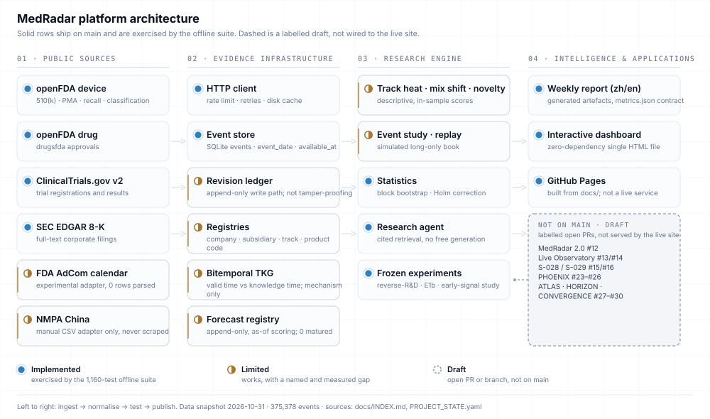
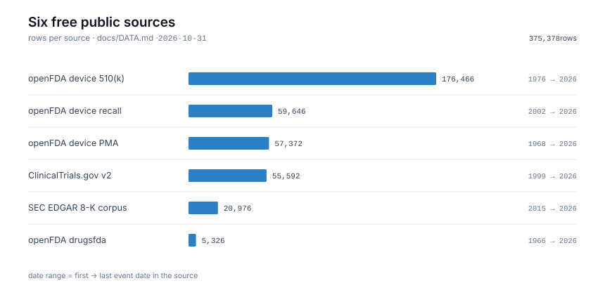
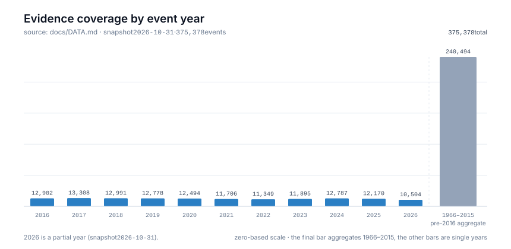

Platform
The machinery behind the numbers
One event store, six free sources, a rate-limited HTTP layer and generated artefacts. Every boundary below is deliberate, including the parts that are absent.
Architecture
Solid edges ship. Dashed nodes do not.
Sources → HTTP layer → event store → registries, analysis, statistics, bitemporal store, forecast registry → reports and dashboard. Roadmap drafts are drawn as unconnected dashed nodes and are not wired in.

source: docs/assets/architecture/architecture-en-light.svg; README.md → Architecture
Sources
Six free public sources, no credentials.
Row counts and event-date windows are from the committed data audit for the 2026-10-31 snapshot. The SQLite snapshot itself is not committed.
| Source | Kind | Rows | Event-date window |
|---|---|---|---|
| openFDA device 510(k) | 510k | 176,466 | 1976-07-15 → 2026-10-18 |
| openFDA device recall | device_recall | 59,646 | 2002-11-01 → 2026-10-28 |
| openFDA device PMA | pma | 57,372 | 1968-10-09 → 2026-10-16 |
| ClinicalTrials.gov v2 | trial | 55,592 | 1999-10-19 → 2026-10-30 |
| SEC EDGAR 8-K corpus | 8k_catalyst | 20,976 | 2015-01-02 → 2026-10-30 |
| openFDA drugsfda | drug_approval | 5,326 | 1966-12-14 → 2026-10-22 |
| Total | — | 375,378 | 1966-12-14 → 2026-10-30 |
source: docs/DATA.md → sources and coverage windows; docs/metrics.json → meta.counts (source counts sum to the event total)

source: docs/assets/figures/sources-en.svg; docs/DATA.md
Coverage quality
What is joined, and what is honestly missing.
Coverage is reported as a share of events with the plain-language meaning next to it. Missing is reported as missing, never as zero.
| Signal | Rows | Share | What it means |
|---|---|---|---|
| Company key resolved | 132,293 | 35.2 % | About one event in three can be tied to a company. The rest are counted as unmatched. |
| Technology track resolved | 196,542 | 52.4 % | About half of events carry a track. Track-level aggregates are therefore half-blind. |
| Product code present | 290,909 | 77.5 % | Most device rows carry a product code, which is what the product families are built from. |
Timestamp quality date | 375,378 | 100 % | Day resolution everywhere; no row carries a time-of-day publication instant. |
| Independent public time | 0 | 0 % | published_at = available_at = event_date on every row. This is the constraint behind every return caveat. |
source: docs/DATA.md → 覆盖质量; docs/metrics.json

source: docs/assets/figures/coverage-en.svg; docs/DATA.md
Registry and price layers
- Companies
- 89 — 81 with a ticker, 43 in the focus set
- Technology tracks
- 60
- Product codes
- 7,097 — 1,958 mapped to a track (27.6 %)
- Prices
- 1,898,409 rows · 1,017 tickers · 2016-10-31 → 2026-10-30
- Signals
- 127
source: docs/DATA.md; docs/metrics.json
Capability matrix
Status, evidence path, and the caveat that travels with it.
The site vocabulary maps to the repository's generated one: implemented = working; limited = working with a measured gap or mechanism only; draft = branch-only; planned = not started.
- implementedRuns on main and is exercised by the offline test suite.
- limitedWorks, but a named gap limits what it can support (partial resolution, descriptive only, mechanism only).
- draftExists only on a draft branch or PR. Not shipped and not wired in.
- plannedRoadmap item with an explicit blocker. No code path claimed.
| Capability | Status | Evidence | Validation note |
|---|---|---|---|
| Ingest: openFDA device/drug, ClinicalTrials.gov, SEC 8-K | implemented | medradar/collect_*.py, intelligence/ | Counts reproduce from live sources. |
| Event store with bitemporal fields | implemented | medradar/db.py | Every row carries event date, availability and quality; 0 rows of independent public time. |
| Append-only revision ledger | implemented | medradar/evidence_core/ | Records the application write path; explicitly not tamper-proofing. |
| Company / track / product-code resolution | limited | medradar/config.py, config/*.json | 35.2 % company key, 52.4 % track; unmatched counted, never guessed. |
| Descriptive analytics: heat, mix shift, novelty | limited | medradar/analyze.py | Descriptive, in-sample scores; no out-of-sample validation. |
| Event study, replay, simulated long-only book | implemented | medradar/eventstudy.py, replay.py, paper.py | Working as simulation: in-sample, 38 trades, not investment advice. |
| Bitemporal knowledge store | limited | medradar/tkg/ | Mechanism only: the imported history has no independent public clock. |
| Forecast registry with as-of scoring | limited | medradar/forecast_registry.py | Mechanism only: 25 registered forecasts, 0 matured; calibration state insufficient_matured_forecasts. |
| Deterministic evidence-grounded research agent | implemented | medradar/research_agent.py | Retrieval-and-citation workflow; establishes no causality. |
| Reports and zero-dependency dashboard | implemented | medradar/report.py, docs/dashboard.html | Generated artefacts, not a live service. |
| FDA AdCom collector | limited | medradar/adcom.py | Parses zero rows (client-side calendar); returns empty / source_changed. |
| CLI, offline demo and selftest | implemented | medradar/__main__.py | 1,160 offline tests, no network, no API key. |
| Market-to-R&D lane | draft | docs/MARKET_DATA.md, experiments/ | Recorded as a draft capability; its frozen artefacts and negative result are public. |
| Publication / patent lane | draft | docs/PUBLICATION_PATENT_DATA.md | OpenAlex counts evaluated; the US patent path is key-gated and not evaluated. |
| Early-signal study (5 firms) | draft | research/studies/early_signal_5firms/ | Phase 0 CONDITIONAL-GO; lead-time gate NO-GO; no public claim. |
| Paper drafts with claim maps | draft | papers/ | Not submitted, not peer reviewed. |
| Weekly forecast-cycle workflow | draft | .github/workflows/forecast-cycle.yml | Committed; not executed in the authoring environment. |
| Live observatory lane | draft | medradar/live.py | Paper trading only; not investment advice. |
| Re-acquire independent public timestamps | planned | README.md → Roadmap | The prerequisite for any point-in-time claim. EDGAR first. |
| Graph features in the scoring models | planned | README.md → Roadmap | The relation graph informs the agent only, not the models. |
| Difference-in-differences / synthetic control | planned | README.md → Roadmap | No causal claim is made anywhere in the repository. |
source: README.md → What is implemented; PROJECT_STATE.yaml → capabilities (7 working · 6 draft · 1 retired); docs/DATA.md
Deliberately absent
The most important part of the matrix is the hole.
A capability that is missing because the data cannot support it is a design decision. Each hole below has a stated reason.
Drafts, not features
Six capabilities are recorded as draft in PROJECT_STATE.yaml, and the
lanes tracked in PRs #12–#30 are branch-only. None is served by this site and none is
presented as a capability.
source: PROJECT_STATE.yaml; README.md → Not in main, not claimed
Retired on purpose
The monthly-resolution deployment detector was retired by decision D-045: at roughly 0.2 events per cell-month, a monthly detector cannot resolve a change. The deployment resolution is quarterly.
source: PROJECT_STATE.yaml → capabilities (retired); research/DECISIONS.md
Not evaluated or excluded
- Patents — USPTO Open Data Portal requires a key; not evaluated.
- Procurement — excluded: the snapshot is not point-in-time usable.
- NMPA (China) — deliberately not scraped; values are
null, never zero. - AdCom — parses zero rows because the calendar is client-side.
source: README.md → Limitations 5, 6, 9; docs/PUBLICATION_PATENT_DATA.md
What does work, end to end
The offline path works from a clean clone with no network: install, run 1,160 tests, build the demo artefact, and read the generated report and dashboard. That is the reproducible claim this project stands behind.
source: README.md → Reproduce; PROJECT_STATE.yaml → tests
Reproduction
Reproduce the procedure, not the numbers.
The 1.3 GiB SQLite snapshot is intentionally not committed, so a clean clone rebuilds the pipeline and the artefact formats, not the exact counts.
source: README.md → Reproduce; PROJECT_STATE.yaml → tests
experiments/reverse_rd_v1/ and experiments/reverse_rd_v2/. Every
metric definition is in docs/METHODS.md and the data contract is
docs/SCHEMA.md; change those before changing a number.
git clone https://github.com/ChazY11/medradar.git
cd medradar && pip install -e .
# offline: no network, no API key
python -m pytest -q -o addopts=""
medradar demo
# live radar run: network needed, no API key
medradar run --months 24 --with-trade --with-dashboard
# frozen market-to-R&D study
python experiments/reverse_rd_v2/run_v2.py --db data/medradar.sqlite --holdouts 3